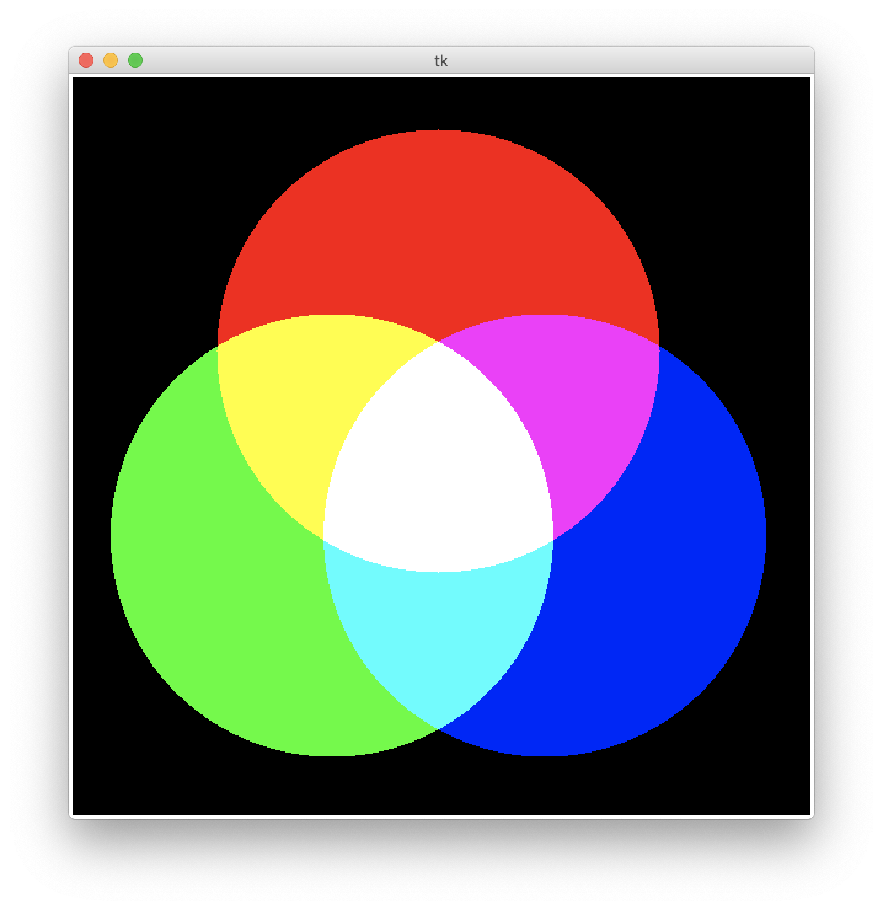
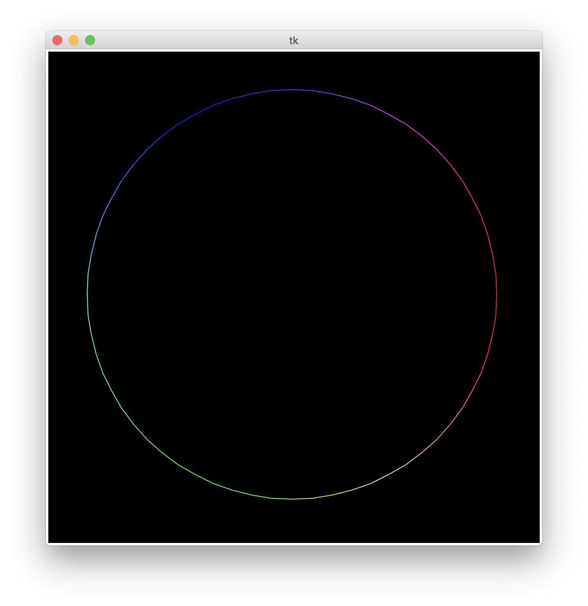
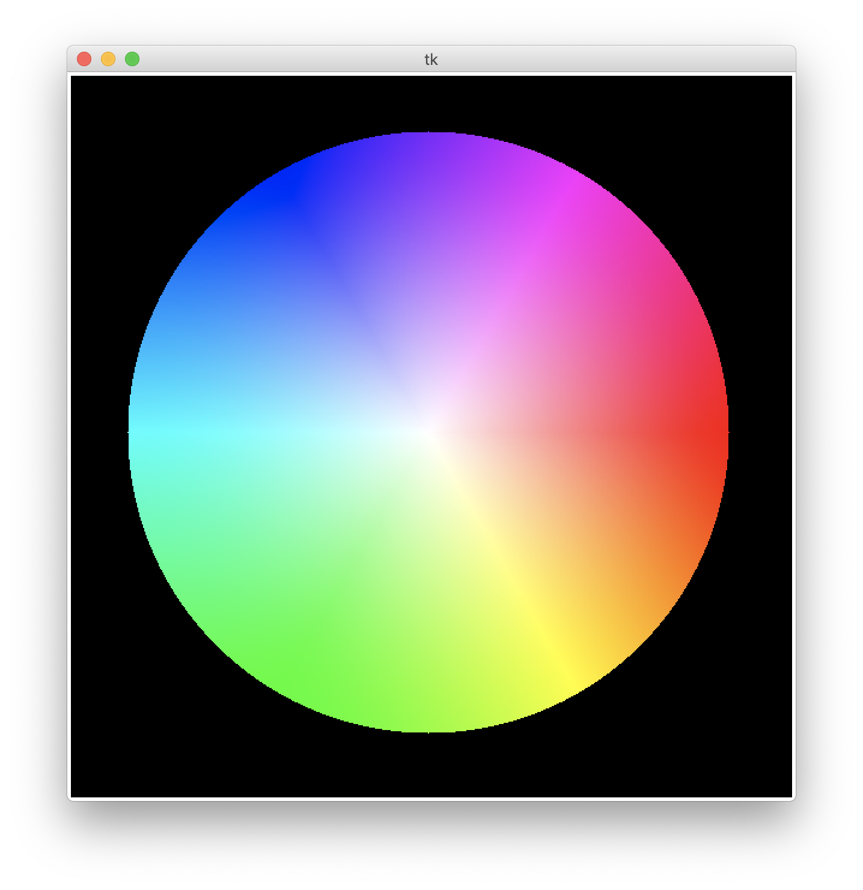
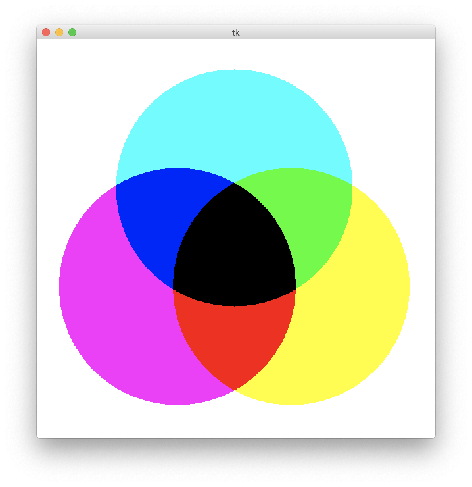
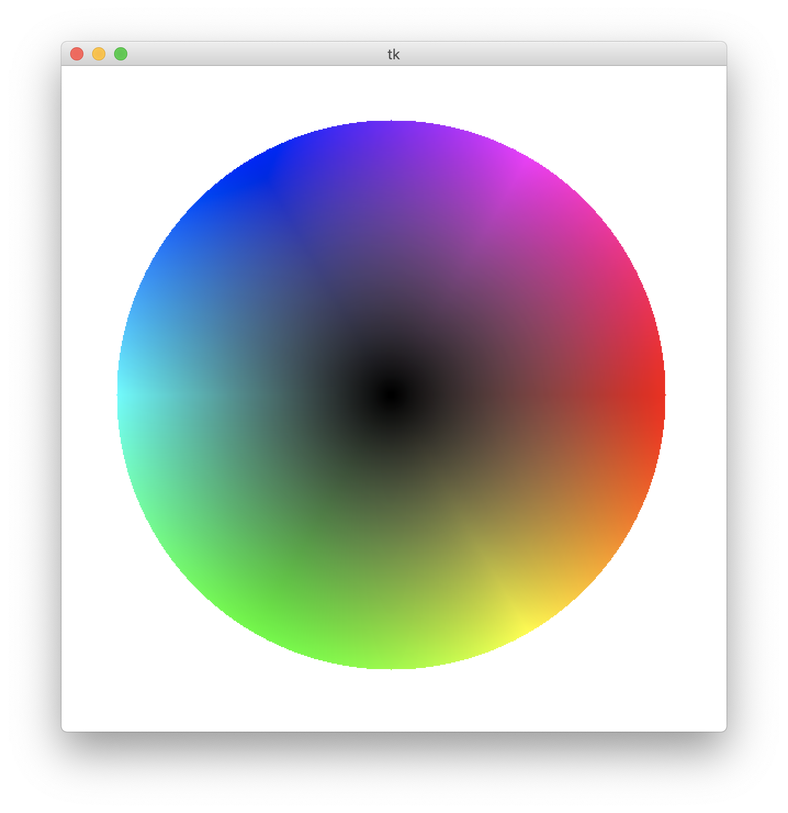

(第3回)
| 氏名 | 林橘平
|
|---|
| クラス | 総合情報学コース3年
|
|---|
| 学生証番号 | 08-192025
|
|---|
□課題3.1 - 3.3節 例1:光の三原色
○プログラムリスト
例題のため略
○実行コマンド
MBP:Chap02 hayashikippei$ python3 additiveColor.py
○実行結果

○考察
点から3つの円の中心からの距離を調べ、円の内部にあれば6桁の文字列のその色に対応する位置に'ff'を、外部にあれば'00'を持ってくる。
こうすれば３色の円を描くことができ、かつ円同士が重なる場所はその色に対応する要素を両方持った文字列になるため、色が加法混色される。
こうして光の三原色による円を描くことができる。
□課題3.2 - 3.3節 例2:色相円
○プログラムリスト
例題のため略
○実行コマンド
MBP:Chap02 hayashikippei$ python3 colorRingRGB.py
of points -> 64
○実行結果

○考察
circleモジュールで円上の点の座標を得て、基点から何番目の点かに応じてそれらの点を6つに分割する。それらの領域で点の順番を変数としてカラーコード
を変えることで、徐々に色を変化させることを実現した。よくwordなどのワープロソフトで文字の色を選ぶときに色相円の好きな箇所をクリックすると
その色を選択できる機能があるが、あれはこれと同じような手法で円を描き、GUIでクリックした点の座標を得て、その座標値からカラーコードを得ているのでは
ないかと考えた。
□課題3.3 - 3.3節 例3:HSV表現と色円盤
○プログラムリスト
例題のため略
○実行コマンド
MBP:Chap02 hayashikippei$ python3 colorDisk.py
○実行結果

○考察
HSV表現によって色円盤を描画するプログラム。まず、中心からの角度によって色相hを決定し、中心からの距離によって彩度sを決定する。
明度は円の内部なら1、外部なら0かの２パターンのみである。こうして決定したHSVの値をcolorsysモジュールによってrgb値に変換して描画する。
□課題3.4 - 3.3節 章末課題:色の三原色
○プログラムリスト
from tkinter import *
W, H = (600, 600)
def display(canvas):
radius2 = 180**2
centers = ((300.0,225.0), (213.4, 375.0),(386.6, 375))
for y in range(H):
for x in range(W):
color = '#'
for i in range(3):
dist2 = (x-centers[i][0])**2 + (y - centers[i][1])**2
color += 'ff' if dist2 > radius2 else '00'
canvas.create_rectangle((x,y),(x,y), outline = '', fill = color)
def main():
root = Tk() # ルートフレームの作成
canvas = Canvas(root, width = W, height = H)
# canvasの作成
canvas.pack() # canvasの配置確定
display(canvas) # 描画関数 (display) の呼出
root.mainloop() # ルートフレームの実行ループ開始
if __name__ == '__main__': # 起動の確認 (コマンドラインからの起動)
main() # main関数の呼出
○実行コマンド
MBP:Chap02 hayashikippei$ python3 subtractiveColor.py
○実行結果

○考察
例1の加法混色の例を参考にした。具体的にはcolor += 'ff' if dist2 > radius2 else '00'の部分しか変えていない。
例１と同じく、３つの円の中心からの距離によって色の文字列を変えるのだが、今回は円の内部であれば'00'を,外部であれば'ff'を持ってくる。
こうすることで減法混色を表現できる。もし円の色の配置を変えたければcentersに与える座標の順番を変えれば良い。
□課題3.5 - 3.3節 章末課題:HSV表現を用いた色相円
○プログラムリスト
from tkinter import *
import circle
import colorsys
W, H = (600, 600)
def f2hex(x):
return '{:02X}'.format(int(x*0xff))
def string(r,g,b):
return '#' + f2hex(r) + f2hex(g) + f2hex(b)
def color(n,i):
h = i/n
s = v = 1.0
r, g, b = colorsys.hsv_to_rgb(h,s,v)
return string(r,g,b)
def display(canvas, points):
for i in range(len(points)):
j = (i + 1) % len(points)
canvas.create_line(points[i], points[j], fill = color(len(points), i))
def main():
root = Tk() # ルートフレームの作成
canvas = Canvas(root, width = W, height = H, bg = 'black')
# canvasの作成
canvas.pack() # canvasの配置確定
points = circle.circle()
display(canvas, points) # 描画関数 (display) の呼出
root.mainloop() # ルートフレームの実行ループ開始
if __name__ == '__main__': # 起動の確認 (コマンドラインからの起動)
main() # main関数の呼出
○実行コマンド
MBP:Chap02 hayashikippei$ python3 colorRingHSV.py
of points -> 64
○実行結果

○考察
例2のプログラムのcolor()関数を変更した。具体的には、h = i/nによって色相値hに角度に応じた値を与えたのち、colorsysモジュールでhsv表現からrgb表現
へ置換した。HSV表現は角度と相性が良い。HSV表現、RGB表現、二つの特性を理解した上でより適切で簡潔に記述できる方を選ぶことが重要だと考えた。
□課題3.6 - 3.3節 章末課題:明度を変換させた色円盤
○プログラムリスト
from tkinter import *
import math
import colorsys
from colorRingRGB import string
W, H = (600, 600)
def display(canvas):
center = (300,299)
radius = 250
for y in range(H):
for x in range(W):
dx = x -center[0]
dy = y - center[1]
h = math.atan2(dy,dx) / (2 * math.pi)
h = h if h >= 0.0 else h + 1.0
s = (dx**2+dy**2) **0.5 / radius
v = 1.0 if s > 1.0 else s
s = 0.0 if s > 1.0 else s
r, g, b = colorsys.hsv_to_rgb(h, s,v)
color = string(r, g, b)
canvas.create_rectangle((x,y),(x,y), outline = '', fill = color)
def main():
root = Tk() # ルートフレームの作成
canvas = Canvas(root, width = W, height = H, )
# canvasの作成
canvas.pack() # canvasの配置確定
display(canvas) # 描画関数 (display) の呼出
root.mainloop() # ルートフレームの実行ループ開始
if __name__ == '__main__': # 起動の確認 (コマンドラインからの起動)
main() # main関数の呼出
○実行コマンド
MBP:Chap02 hayashikippei$ python3 colorDisk2.py
○実行結果

○考察
例題3では固定の値を取っていた明度を、中心からの距離によって変更した。v = 1.0 if s > 1.0 else s
円の外側では一番明るい1.0で、そこから中心にいくに従ってだんだんと減少し、中心では0になる。
□課題や授業に関して
○レポート作成に要した時間
3時間
○特に苦労した点
なし
○授業についての感想や希望
なし